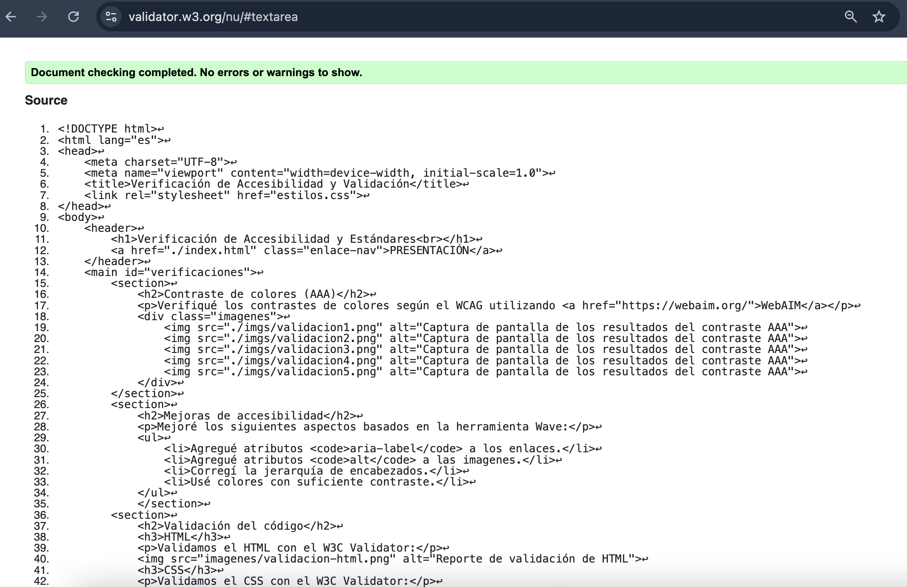

Contraste de colores (AAA)
Verifiqué los contrastes de colores según el WCAG utilizando WebAIM
Mejoras de accesibilidad
Mejoré los siguientes aspectos basados en la herramienta Wave:
- Agregué atributos
aria-labela los enlaces. - Agregué atributos
alta las imagenes. - Corregí la jerarquía de encabezados.
- Usé colores con suficiente contraste.
Validación del código
HTML
Validé el HTML con el W3C Validator:

CSS
Validé el CSS con el W3C Validator:

Pautas de accesibilidad implementadas
- Contrastes AAA en todos los textos.
- Jerarquía semántica correcta.
- Navegación por teclado funcional.